Spark SQL physical planner: choosing the operators
component index | Adaptive Query Execution
The planner answers how should this logical query run? It returns a tree of
SparkPlan operators, not rows, Spark stages, or YARN container requests. In classic
PySpark it runs in the driver JVM: in the ApplicationMaster container in YARN
cluster mode, or on the submit host in client mode. SessionState supplies the
SparkPlanner; each QueryExecution keeps its own plans. An action needs the plan,
but explain can ask for it before the data is processed.
Flow at a glance
- Logical join: The planner receives an optimized left join of orders and regions.
- Build side: The planner picks a hash join that broadcasts the small right side, regions.
- Prepared plan: A preparation rule adds the exchange that will broadcast regions.
Key distinction: The SQL planner chooses operators; the core schedulers later form stages and launch tasks.
Show the animated flow

What crosses each interface
| Handoff |
Input, output, and owner |
| Analyzer and optimizer to planner |
analyzer.executeAndCheck resolves names and types. The optimizer rewrites the resolved logical tree. QueryExecution keeps analyzed, optimizedPlan, and the later physical plans separately; it passes a clone of the optimized tree to createSparkPlan. |
SparkPlanner to QueryExecution.sparkPlan |
Ordered strategies receive logical nodes and return zero or more physical candidates. QueryPlanner.plan recursively fills PlanLater children; SparkStrategies.plan links the physical node to its logical origin. createSparkPlan takes the first result of planner.plan(ReturnAnswer(plan)), not the cheapest of every possible tree. |
sparkPlan to executedPlan |
prepareForExecution applies rules to a clone of the selected plan. EnsureRequirements compares child partitioning and ordering against parent requirements, inserting exchanges or local sorts where needed. If AQE wraps the tree, it runs its own stage preparation. executedPlan means prepared for execution, not already run. |
| Physical operators to the core scheduler |
For the row path, SparkPlan.execute() supplies an RDD[InternalRow]. A distributed action submits work over RDD dependencies. The DAGScheduler forms scheduler stages at shuffle dependencies and submits TaskSets to the task scheduler. Several SQL operators can run in one task; a SQL operator is not a scheduler stage. |
The analysis, query-local plan state, strategy list,
placeholder expansion, logical links, and
first-candidate selection are separate pieces of this handoff.
Trace: why the regions table is built on the right
- Suppose
orders o LEFT JOIN regions r ON o.region_id = r.id AND o.amount >= r.minimum
has integral equality keys, no hints, a large orders, and a 6 MiB estimated
right side after filtering. ExtractEquiJoinKeys extracts region_id and id;
the amount comparison remains a condition on matching pairs.
JoinSelection tests whether the keys support binary-stable hashing and whether
the join type permits that build side. A left outer hash join can build the
right, not the preserved left. The automatic size test is
0 <= sizeInBytes <= autoBroadcastJoinThreshold; at a 10 MiB threshold, 6 MiB
qualifies. A broadcast hint can bypass the estimate test, not the join-type or
key restrictions. If broadcast is ineligible, the strategy tries alternatives;
for example, a sort-merge join needs orderable keys.- The selected
BroadcastHashJoinExec(BuildRight) asks for a hashed broadcast on
regions and no particular distribution on orders. During preparation an
unsatisfied build-side requirement becomes a broadcast exchange.
At this point the planner has not collected regions or probed an order.
- At execution the join consumes the relation. If AQE is
active, distinguish this initial choice from the final SQL plan: runtime
statistics may justify a different choice before the remaining work runs.
When the plan surprises you
Use df.explain("extended") to see where a logical operation became a physical one,
df.explain("cost") to inspect the estimates, and df.explain("formatted")
to find the join, build side, and exchanges. An unresolved column is an analysis
failure; increasing executor retries will not fix it. A stale size estimate can
produce a perfectly valid plan that later times out or exhausts driver memory
building the broadcast. For that case, compare the estimate with the exchange's
runtime data size in the SQL UI for the actual action.
Implementation: join strategies and fallback order ·
build-side eligibility · size and join-type checks ·
distribution enforcement · RDD execution ·
scheduler handoff · EXPLAIN modes.